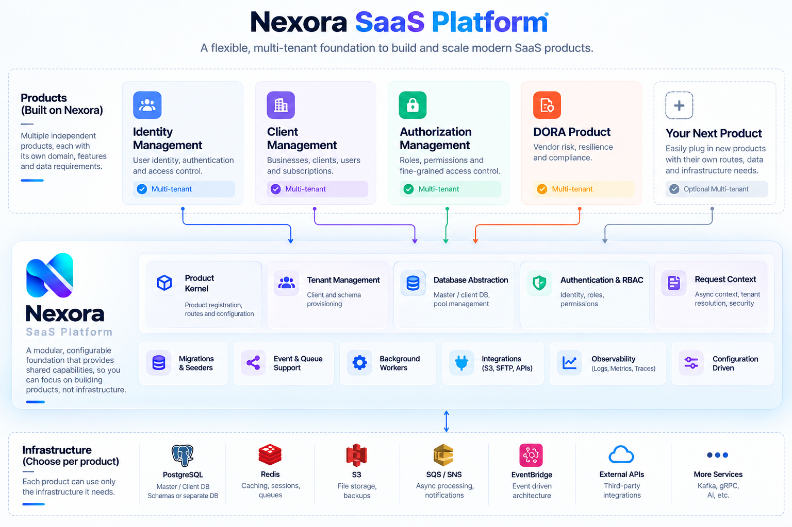
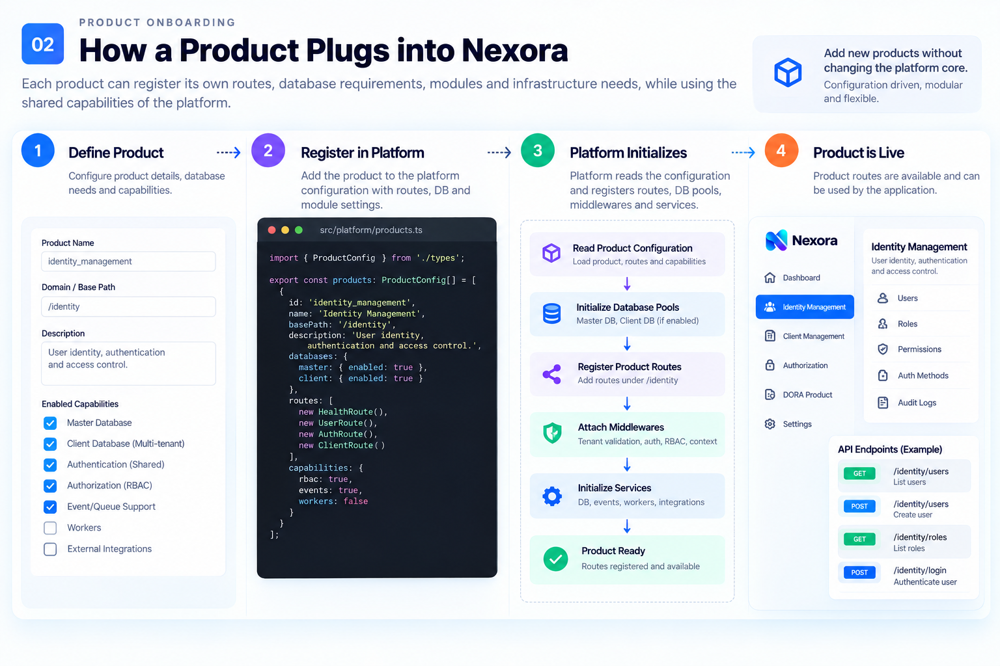
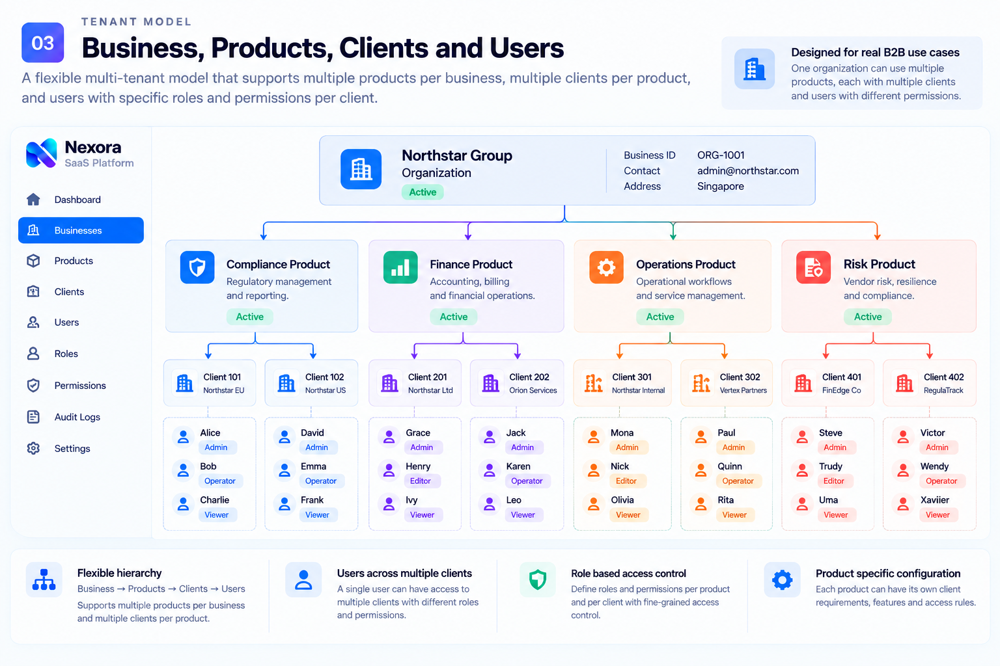
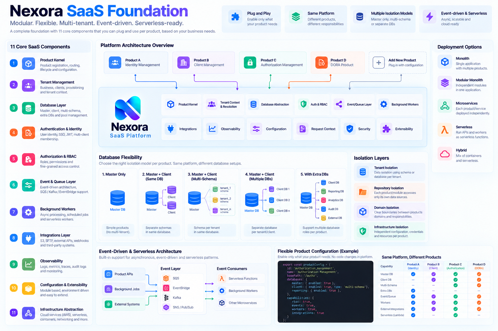

Product Kernel
Product registration, routes, modules and configuration.
A configurable foundation for multi-tenant SaaS products, database isolation, event-driven workloads, integrations, automation and the evolution from modular monoliths to distributed services.
The platform provides reusable engineering capabilities without forcing every product into the same business model.
Products choose what they need: database topology, tenant isolation, routes, workers, events, integrations and deployment strategy.
Products plug into shared capabilities while keeping their own domain and responsibilities.

Product registration, routes, modules and configuration.
Business, client, tenant context and provisioning.
Master, client, schemas, pools and isolation strategies.
Authentication, roles, permissions and client membership.
Asynchronous communication and event-driven workflows.
Background processing, scheduled work and async consumers.
APIs, SFTP, object storage, webhooks and external systems.
Logs, metrics, traces, request context and operational visibility.
Environment and product-driven configuration without hard-coding topology.
Keep application code independent from underlying infrastructure choices.
Add capabilities when real products prove they are reusable.
The foundation grows from real product requirements.
Independent routes, database requirements and capabilities can be registered without rewriting the platform core.

Support the hierarchy that a product actually needs rather than forcing every product into one tenancy model.

The same platform can support very different database responsibilities.
A lightweight product can operate entirely from its master database. No tenant-specific database layer is required.
Event-driven, serverless-ready and designed for products with different runtime and infrastructure needs.

Resolve trusted client context before accessing client-specific data.
Domains own their data access rather than reaching into another domain's repository.
No accidental cross-domain database access or cross-domain transactions.
Use explicit contracts, events and later HTTP or gRPC when services split.
New capabilities are introduced when real products prove that they should be shared.
Products own their route trees and modules.
Use the right runtime for the workload while preserving platform boundaries.
Debugging, code review, documentation and development context through controlled integrations.
Automated build, test, security checks and environment deployment.
Versioning, changelogs, release workflows and rollback support.
Structured Git workflows with automated checks and protected release paths.
Nexora is intended to make product development faster without turning every product into the same product.
Back to top ↑